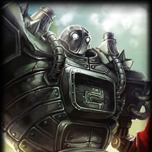
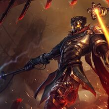
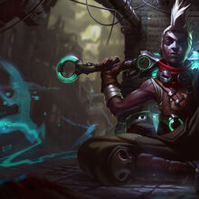
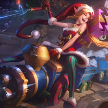

Zaun
La historia de Zaun es bastante triste, ubicada debajo de Piltover, esta ciudad esta llena de pobreza, desesperacion, familias rotas y delincuencia. Muy pocos son capaces de salir de Zaunpara buscar una vida mejor en la Ciudad del Progreso, pero tambien hay unos pocos que deciden quedarse a intentar mejorar la situacion de sus gentes para asi hacer de Zaun un lugar respetable.
Algunos de los campeones mas importantes de Zaun son:
|  |  |  |  |
|---|